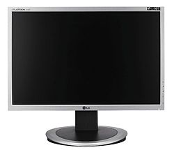

La tecnología en la fabricación de monitores es muy compleja y no es propósito ahora de profundizar en estos aspectos. Sí los vamos a tratar superficialmente para que sepáis cuáles son los parámetros que más os van a interesar a la hora de elegir vuestro monitor.
Son las dimensiones de la diagonal de la pantalla que se mide en pulgadas. Podemos tener monitores de 9, 14, 15, 17, 19, 20 y 21 ó más pulgadas.
Un pixel es la unidad mínima de información gráfica que se puede mostrar en pantalla. Cuantos más pixels pueda mostrar el monitor de más resolución dispondremos. Traducido a lenguaje "de la calle" quiere decir que más elementos nos cabrán en ella.
Es una técnica que permite al monitor alcanzar mayores resoluciones refrescando el contenido de la pantalla en dlls barridos, en lugar de uno.
El rayo de electrones debe recorrer toda la superficie de la pantalla empezando por la esquina superior izquierda, y barriéndola de izquierda a derecha y de arriba abajo. La frecuencia de refresco, medida en Hertzios, es el número de veces que el cañón de electrones barre la pantalla por segundo.
Un punto del monitor es la unidad mínima física que puede mostrarse en la pantalla. Dependiendo de la resolución lógica que utilicemos se adaptará la salida para que un pixel ajuste perfectamente con una o un conjunto de estas celdillas físicas de pantalla.
Si el monitor es importante para poder ver qué hacemos y lo que nos dice el sistema, más importante son nuestros ojos y nuestra salud. Está demostrado científicamente, y en la práctica, que trabajar ante un monitor produce cansancio, picor e irritación de ojos, vista cansada, dolor de cabeza y visión borrosa.
Últimamente se habla del avance de la tecnología LCD o cristal líquido, llegando incluso a citarse como posible alternativa de futuro frente al tradicional CRT. Ventajas como el ahorro de consumo y de espacio (LCD posibilita la fabricación de pantalla extra-planas, de muy poca profundidad), así como la prácticamente nula emisión de radiaciones, aportan un gran interés a este tipo de dispositivos.